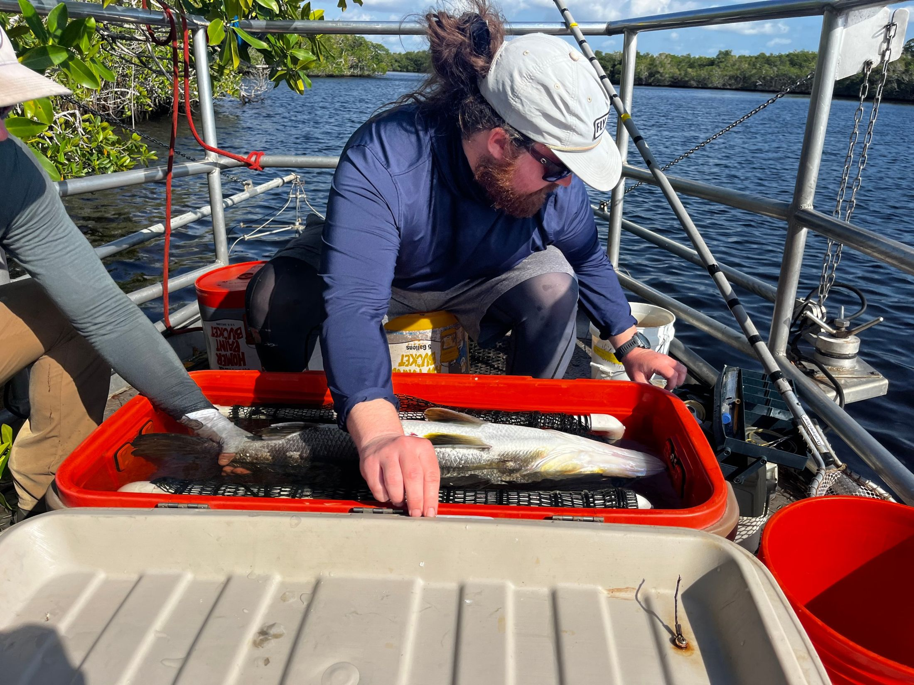
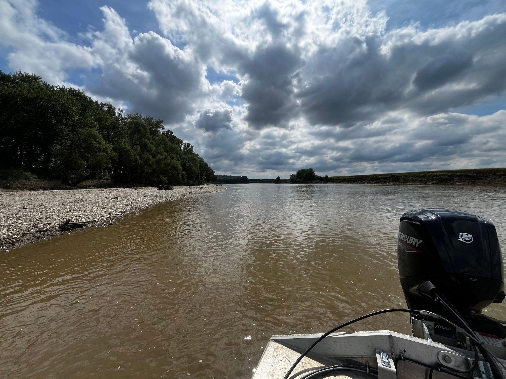

From mountain streams to mangrove estuaries to coral reefs, I study how animals move, forage, and recycle nutrients, and how global change is reshaping all three. Explore where the work happens, then read what we found.
Animal movement
Nutrients and food webs
Rivers under global change
Synthesis sites
Pin locations are approximate. Select a pin to see the question and papers behind it.

Acoustic tagging surgery on a Common Snook in Tarpon Bay, Everglades National Park
Animal movement
When, where, and why do animals move?
Using acoustic telemetry, accelerometers, and long-term tracking, I follow individual mesopredators through the coastal Everglades to learn how temperature, water levels, and body size shape what they do.
In wetter years, snook showed greater individual specialization in space use, and, contrary to predictions, their trophic niche contracted.
Santos et al. 2025, Scientific Reports
Migrant Smallmouth Buffalo sampled from Citico Creek, Cherokee National Forest
Nutrients and food webs
How do animals move nutrients and energy through ecosystems?
Fish recycle elements within and across seemingly disparate ecosystems. I measure those nutrient and energy fluxes, from a single spawning run to decades of data across vastly different ocean ecosystems.
An estimated 67,000 migrating Smallmouth Buffalo delivered ~730 kg of nitrogen and ~80 kg of phosphorus to Citico Creek in a single spawning season.
White et al. 2023, Ecology of Freshwater Fish
Migrating redhorses delivered a spring pulse of nitrogen, mostly through their eggs, when the stream was exporting little nitrogen of its own.
Hudson et al. 2024, Ecology of Freshwater Fish
Species richness had strong, positive effects on the stability of consumer-mediated nutrient dynamics (CND) across ecosystems, though species asynchrony was the primary driver within ecosystems.
White et al. 2026, PNAS
In dry, warm years, snook faced a mismatch: energy demands rose while diet quality fell, showing that climate change can limit consumers from both sides of the equation.
White et al. 2025, Marine and Coastal Fisheries

Lunch break on the Scioto River, OH
Rivers under global change
How do flow loss, warming, and invasions reshape river communities?
Rivers in the Colorado River basin are drying as demand for water grows and temperatures warm, and Ohio rivers face invasive carp and changing land use. I study what these pressures mean for native fishes and aquatic insects.
Across seven Colorado River basin rivers, aquatic insect communities were less diverse where flows have declined the most.
White et al., in review, Ecohydrology
In a dryland river long considered a refuge, native fish densities collapsed from 2008 to 2025 while nonnatives remained abundant.
Porter et al., in review, Transactions of the American Fisheries Society
What's next
FundedPaddlefish on the move. Tracking American Paddlefish through the Scioto and Ohio Rivers, with support from the Columbus Zoo and Aquarium.
In prepWhere invasive carp stay. How Silver Carp residency varies across the Ohio River and its major tributaries.
In prepLand use versus flow. Whether fish, insect, and mussel life histories across Ohio respond more to land use or to hydrology.
In prepMovement and nutrient flux. How individual movement strategies shape where consumers deposit nutrients and energy.
In prepWhy Y? Evaluating genetic biocontrol for invasive Channel Catfish in the San Juan River basin.
Open data and code
Datasets I've published through the Environmental Data Initiative:
Nitrogen and phosphorus excretion rates of individual marine and estuarine animals (2025)
Seasonal electrofishing data from Rookery Branch and Tarpon Bay, Everglades National Park, 2004 to present (2025)
Movements of aquatic predators in the Shark River estuary, Everglades National Park, 2007 to present (2025)
National Center for Ecological Analysis & Synthesis and the U.S. Long-Term Ecological Research Network, Columbus Zoo and Aquarium, the Everglades Foundation, Florida Forage Fish Coalition, NSF CREST Center for Aquatic Chemistry & Environment, The Ohio State University, Utah State University, and Tennessee Technological University.